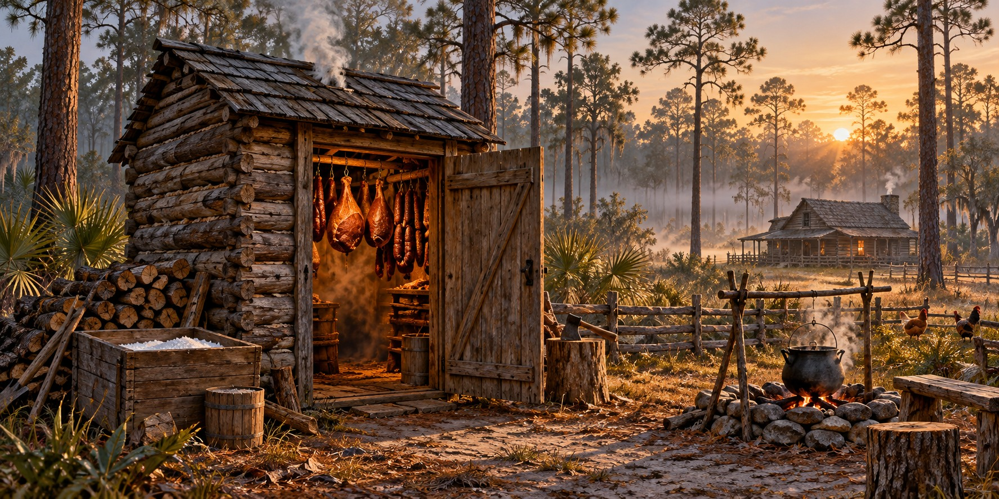

The Florida Smokehouse
Salt, Smoke, and the Small Dark Building That Stood Between a Pioneer Family and Hunger

The smell hits you before you open the door: wood smoke, cured salt, and years of hickory seeping into the logs, the packed earth floor and the rafters where the meat hangs. The smokehouse was not the most impressive building on a pioneer homestead. It was typically eight to ten feet square, built tight to hold smoke, and it was the difference between a family that ate through the winter and one that did not.
Hog-Killing Day
Everything pointed to hog-killing day, which needed sustained cold to slow spoilage during two days of processing. In Florida, where genuine cold was less reliable than in the upper South, waiting for it took patience. A hog killed in warm weather began to spoil before the salt could work.
Neighbors came, since the work was communal. The carcass was scalded and scraped, hung from a gambrel and butchered. Nothing was wasted: organ meats were eaten fresh, intestines became sausage casings, fat was rendered into lard, the head became head cheese and the feet were pickled. The hams, shoulders, middlings and jowls were set aside to chill overnight and then went to the salt box.
The Salt Box
Salt curing was one historical way families tried to preserve pork before dependable refrigeration. Methods varied, and an uneven cure could fail. The old salt box belongs to the history of food storage; it does not supply a tested modern recipe or establish that meat is safe to keep at room temperature.
The Smoke
Smoke added flavor and was part of historic preservation practices. Those practices differed from modern cooking in a smoker. Smoke alone is not proof that food has reached a safe internal temperature or become shelf-stable. Food safety depends on a tested process and proper storage, not the appearance or smell of smoke.
Smoked Fish: Florida’s Coastal Tradition
Fish smoking was also part of Florida’s coastal food traditions. Mullet was valued as food in fishing communities and could be prepared in several ways. Preserving a catch connected fishing with household storage and trade, but a broad historical description cannot establish one firewood choice or curing method as safe.
The Smokehouse and Cracker Culture
A smokehouse represented stored food and a household’s work. Its place beside the cabin, crib and other outbuildings made it part of the farm’s daily routine. Dudley Farm’s documented smokehouse preserves a physical example that can be studied alongside the other buildings used to process and store food.
Quick Facts
| Purpose | Historical meat-preservation and storage building |
|---|---|
| Related work | Butchering, salt curing and smoking |
| Florida example | Smokehouse documented at Dudley Farm |
| Food-safety distinction | Smoke does not by itself prove food is safe or shelf-stable |
Did You Know?
A smokehouse fire was meant to smolder, not cook.
Salt mullet was a trade good between the coast and the interior.
Waiting for cold weather was part of the Florida hog-killing plan.
Modern Food Safety
This article describes historical practice, not instructions for curing or preserving food. Use a tested USDA or extension method for the specific food and process. USDA’s guidance for cooking meat in a smoker calls for safe internal temperatures and prompt refrigeration; historic low-heat smoking and hanging meat in a shed are not substitutes.
Vocabulary
Gambrel: a spreader bar used to hang a carcass.
Middlings: the side cuts that became bacon.
Discussion Questions
1. Why did a Florida family have to wait for cold weather to kill hogs?
2. How did the smokehouse change a family’s security through winter?
Related Articles
FLH-0050 — Building a Homestead
FLH-0052 — Holidays on the Florida Frontier
Sources
Ste. Claire, Dana. Cracker: The Cracker Culture in Florida History. Museum of Arts and Sciences, Daytona Beach, 1998.
Hilliard, Sam Bowers. Hog Meat and Hoecake: Food Supply in the Old South, 1840–1860. Southern Illinois University Press, 1972.
Dudley Farm Historic State Park, Newberry, FL. Preserved smokehouse.
Florida Memory. State Library and Archives of Florida. floridamemory.com
Florida State Parks — History of Dudley Farm